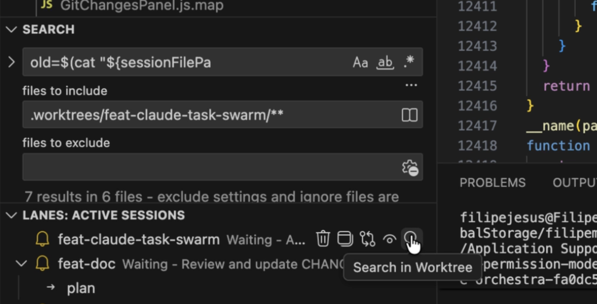
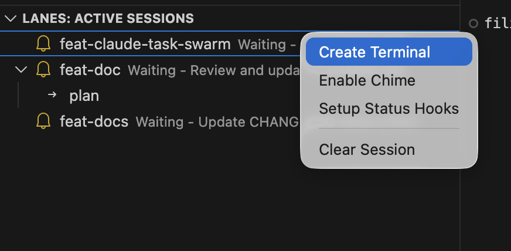

Lanes 1.1: Changing Lanes In a Fast Agentic World
In December, it felt like the world finally woke up to Claude Code This sudden fanaticism caught me by surprise, as a long term Claude Code user I hadn't really noticed much of a difference since the release of Claude's Opus 4.5 in November and to be honest, Opus wasn't much of an improvement over Sonnet 4.5 which released in September.
Despite this, the hype is justified, Claude Code has changed how I work. But let’s be real: it’s not perfect. Anthropic is certainly aware of this, recently they have been seriously ramping up development of new features in Claude Code, often implementing features inspired by the open-source community.
Key features introduced by Anthropic in the last 2 weeks:
- Claude Cowork: A desktop app to manage sessions and handle work outside the programming space.
- Context Clearing: A prompted reset between planning and implementation stages.
- Task Management: A new, exciting system for tracking complex objectives.
So where does this leave lanes?
Introducing Lanes 1.1
Fortunately, Lanes is safe. Nothing Anthropic has released overlaps with the Lanes workflow system. In fact, Lanes' session management remains superior for coders who prefer VS Code over the new Claude Desktop app. If anything, the new features make Lanes even better.
Here is what is new in Lanes 1.1
- New Task Support
- Context management tools e.g.
clearcontext - Artefact Tracking
- Easy within session (worktree) search
- Create new terminals in your session with ease
- Setup chimes to get a audio notification when your session needs input.
Further breakdown of these features below.
Claude Code Tasks Support
The new Claude Code task system takes a lot of inspiration from Beads, Gastown and Claude Flow. It replaces the todos system with a persistent coordination engine capable of managing complex projects with multiple dependencies. It creates a file-system-based dependency graph, the system ensures that tasks and their relationships ("blocked by") survive session restarts, context clearing, and terminal closures.
This architecture enables parallel agentic 'swarms,' allowing Claude to orchestrate multiple sub-agents simultaneously. This not only accelerates development but also optimises resources by automatically routing each task to the most appropriate model (e.g., Haiku for searches, Opus for reasoning).
Crucially, you must set the CLAUDE_CODE_TASK_LIST_ID environment variable for each Claude Code session for tasks to survive restarts. Lanes now handles this automatically for every session, ensuring smooth restarts.
Clear Context
Anthropic recently released a feature where Claude will now prompt you to clear its context between the planning and implementation stage of a workflow. The benefit of this is your orchestrator now has a clean context window to support larger feature development loops.
This is a nice feature if you manage all your work through artefacts, this is something I started doing using the Superpower plugin. To make this more deterministic Lanes now has a context field in the workflow steps. If this is set to clear lanes will clear your session when it reaches this step.
steps:
- id: subagent-driven-development
type: action
context: clear
instructions: |
Here is where you will do the implementations.
Use the "/subagent-driven-development" skill from superpower to start
Note: This field is optional and should only be used if you are confident in your workflow's ability to save plans in artefacts.
Artefact Tracking
You can now specify an artefacts field for your workflow steps. When set to true, Lanes introduces a hook to your Claude Code session that saves the path of any file created during that step.
Downstream steps are then made aware of these artefacts. Claude can decide whether to read them to gain context for the work ahead. This is vital if you clear your context before moving to the next step.
steps:
- id: writing-plans
type: action
artefacts: true
instructions: |
In this step you will plan out the features based on the
brainstorming you just did.
Use the "/writing-plans" skill from superpower to start
Session Search
On each session you can click the search icon which will open the vscode search feature with the include box pre-populated for your worktree. This should hopefully be a nice quality of life feature.

New Terminal
This feature is simple, you can open a new terminal in your worktree through the lanes extension. All you need to do is Right click on your session -> Click 'Create Terminal'. Nothing more to really say here, it will hopefully save you from needing to cd into worktrees multiple times a day.

Chimes [Preview]
Lanes has always had a notification icon, but you won't always have your eyes on it. For sessions demanding immediate attention, you can now enable Chimes. Right click on your session -> Click 'Enable Chime'.
Now, whenever Claude needs your input, you will hear a chime. You can select your preferred sound in the extension settings and test them using the 'Test Chime' command in your Command Palette.
Current Limitation: This works by making the session form emit a noise, meaning the session panel must be active for the chime to work. This is why the feature is currently in preview.